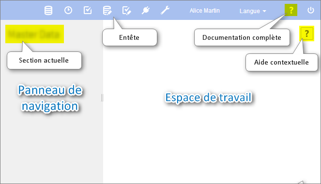
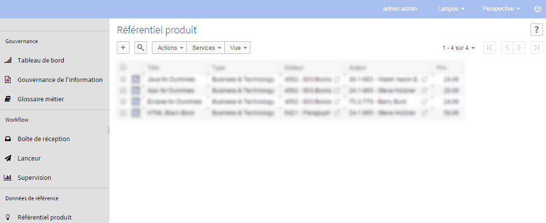
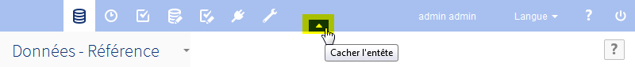
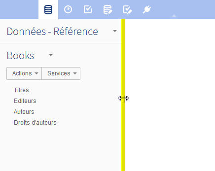
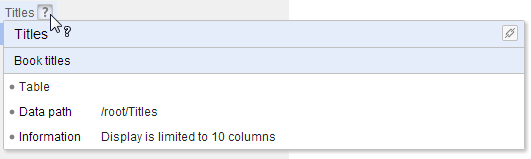

Interface utilisateur EBX5
Contenu de la section
Présentation
La mise en page générale des espaces de travail sur EBX5 est entièrement personnalisable par un administrateur. Si des perspectives personnalisées existent, elles peuvent être sélectionnées via le menu déroulant 'Perspective' qui permet de passer d'une vue à l'autre.
La perspective avancée est accessible par défaut.
Voir aussiFront end administration
Perspective avancée
Par défaut, la perspective avancée d'EBX5 est accessible à tous les utilisateurs. Cependant, son accès peut être restreint à certains profils uniquement. Cette vue est divisée en plusieurs zones principales, référencées dans la documentation sous les termes suivants:
En-tête : le nom de l'utilisateur actuel s'affiche dans cette zone, ainsi que le menu de sélection de la langue (lorsque plusieurs sont disponibles), le menu de sélection des perspectives (lorsque plusieurs sont disponibles), un lien vers la documentation et un bouton pour fermer la session en cours.
Barre de menu : cette zone comprend toutes les fonctionnalités accessibles à l'utilisateur actuel et lui permet de naviguer entre elles.
Panneau de navigation : cette zone résume visuellement les diverses possibilités de navigation. Par exemple : sélectionner une table dans un jeu de données, ou un bon de travail dans un workflow.
Espace de travail : zone de travail principale dépendant du contexte. Par exemple, la table sélectionnée dans le panneau de navigation s'affiche dans l'espace de travail, ou bien un bon de travail en cours s'y exécute.
Les sections fonctionnelles suivantes sont affichées dans l'interface selon les permissions de l'utilisateur actuel : Données, Espace de données, Modélisation, Workflow de données, Services de données, et Administration.

Perspectives
Les perspectives dans EBX5 sont des vues configurables avec une audience définie. Les perspectives permettent aux utilisateurs métier de bénéficier d'une interface simplifiée. Une perspective peut être affectée à un ou plusieurs profils. Cette vue est divisée en plusieurs zones principales, référencées dans la documentation sous les termes suivants:
En-tête : le nom de l'utilisateur actuel s'affiche dans cette zone, ainsi que le menu de sélection de la langue (lorsque plusieurs sont disponibles), le menu de sélection des perspectives (lorsque plusieurs sont disponibles) et un bouton pour fermer la session en cours.
Panneau de navigation : cette zone affiche le menu hiérarchique tel qu'il a été configuré par l'administrateur de perspectives. Ce panneau peut être développé ou réduit et permet d'accéder aux entités et services correspondant à l'activité de l'utilisateur.
Espace de travail : zone de travail principale dépendant du contexte.
Une perspective est configurée par un utilisateur ayant les autorisations nécessaires. Pour plus d'informations sur la configuration d'une perspective, voir perspective administration (en anglais).
Exemple de présentation d'un menu hiérarchique :

Fonctionnalités de l'interface utilisateur
Cacher l'en-tête
L'en-tête de l'interface utilisateur peut être caché en le survolant, puis en cliquant sur le bouton en forme de flèche.

Réinitialiser la largeur du panneau de navigation
Si la largeur du panneau de navigation a été modifiée, elle peut être réinitialisée en double-cliquant sur la bordure.

Où trouver de l'aide sur EBX5
En plus de la documentation complète du produit, l'aide est accessible de plusieurs façons dans l'interface :
Aide contextuelle
Lorsque la souris survole un élément pour lequel une aide spécifique existe, un point d'interrogation apparaît. En cliquant sur le point d'interrogation, un panneau de documentation affiche les informations associées.

Un bouton dans le coin supérieur gauche du panneau permet de récupérer un permalien vers l'élément. Ce bouton n'est pas disponible pour tous les types d'élément.

 Sommaire du guide utilisateur
Sommaire du guide utilisateur